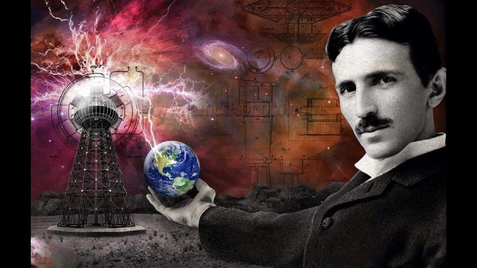
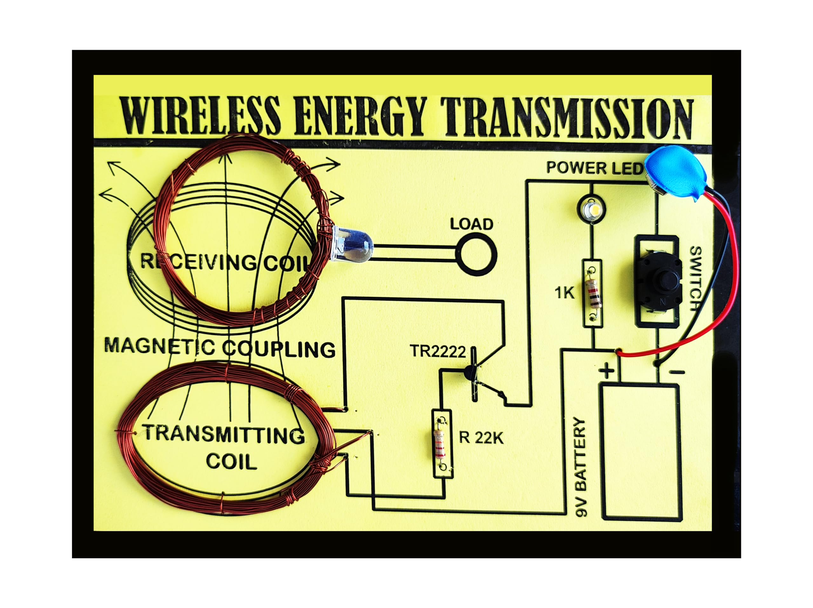
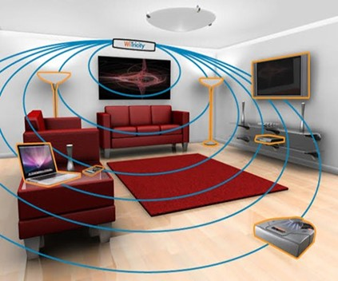

Project Overview
Name: Augustin Jeba Kumar E
Department: Electrical and Electronics Engineering
Institution: Government College of Engineering, Salem-11
Email: augustin162004@gmail.com
Abstract
Can we imagine the life without Electrical wires? From now answer to this question is yes. The method proposed in the present paper called "Witricity" will facilitate to Transfer power without using wires. The efficient midrange power can be transmitted to any device which uses that range of power by the technique used in this Witricity concept.
Now a days there is a Rapid development of autonomous electronics like Laptops, Cell-phones, House hold robots and all the above devices. Typically rely on chemical energy storage (Battery) As they are becoming daily needs to present generation, Wireless energy transfer would be useful for many applications as above and they need midrange energy. This is the main reason to prepare this paper.
Keywords: Witricity, Electrical resonance, Electromagnetic induction, charging algorithm, power capturing device.
Introduction
Wireless electricity or witricity is the transfer of electric energy or power over a distance without the use of wires. In our present electricity generation system we waste more than half of its resources. Especially the transmission and distribution losses are the main concern of the present power technology.
Much of this power is wasted during transmission from power plant generators to the consumer. The resistance of the wire used in the electrical grid distribution system causes a loss of 26-30% of the energy generated. This loss implies that our present system of electrical distribution is only 70-74% efficient.
We have to think of alternate state of art technology to transmit and distribute the electricity. If we don't keep pace with the development of new power technology we have face a decreasing trend in the development of power sector. The transmission of power without wires may be one noble alternative for electricity transmission.
History
The 19th century saw many developments of theories, and counter-theories on how electrical energy might be transmitted. In 1826, André-Marie Ampère discovered a connection between current and magnets. Michael Faraday described in 1831 with his law of induction the electromotive force driving a current in a conductor loop by a time-varying magnetic flux.
Transmission of electrical energy without wires was observed by many inventors and experimenters, but lack of a coherent theory attributed these phenomena vaguely to electromagnetic induction. Wireless power transmission is not a new idea. Nickolas Tesla demonstrated transmission of electrical energy without wires in early 19th century.
In 1899, Sir Nikola Tesla proposed a method of Wireless Power Transmission. As it is in Radiative mode, most of the power was wasted and has less efficiency. Due to this he introduced a new method of power transmission, the efficient mid range power transfer concept was used called "WITRICITY".
1826
André-Marie Ampère
Discovered connection between current and magnets
1831
Michael Faraday
Described law of induction
1899
Nikola Tesla
Proposed method of Wireless Power Transmission
Present
WITRICITY
Efficient mid-range power transfer concept

Principle of WITRICITY
It reveals the main idea of the "resonance condition" between two circuits".
Electrical Resonance
Electrical resonance occurs in an electric circuit at a particular resonance frequency when the impedance between the input and output of the circuit is at a minimum (or when the transfer function is at a maximum). Often this happens when the impedance between the input and output of the circuit is almost zero and when the transfer function is close to one.
Resonance of a circuit involving capacitors and inductors occurs because the collapsing magnetic field of the inductor generates an electric current in its windings that charges the capacitor, and then the discharging capacitor provides an electric current that builds the magnetic field in the inductor, and the process is repeated continually.
Working
Current from the wall outlet flows through a coil inside the charger, creating a magnetic field. In a transformer, this coil is called the primary winding. When the device placed on the charger, the magnetic field induces a current in another coil, or secondary winding, which connects to the battery. This current recharges the battery.
Modern science has now made it possible to use electricity without having to plug in any wires. This concept is called "WITRICITY" which seems to have a bright future in providing wireless electricity.
The researchers demonstrate the ability to transfer 60W with approximately 40% efficiency over distance in excess of 2 meters. Currently the project is looking for power transmission in the range of 100watts. As witricity is in the development stage, lot of work is to be done in improving the range of power transmission and efficiency.

Conclusion
The transmission of power without wires is not a theory or a mere possibility, it is now a reality. The electrical energy can be economically transmitted without wires to any terrestrial distance. Better than Wired Transfer. In Future – World will be completely Wireless.
